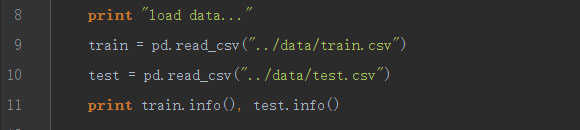

Kaggle竞赛项目的全过程：
- 了解问题背景：对竞赛的背景进行了解
- 下载数据
- 分析数据：Explore Data Analysis
- 数据处理和特征工程：Data Process and FeatureEngineering
- 模型选择：Model Select
- 提交结果：Submission
第一步：了解问题背景
第二步：下载数据
要用到google api，电脑要连外网，所以现在是手机下载，百度云发到电脑上
- gender_submission.csv：我们需要提交的示例文件
- test.csv：测试数据集
- train.csv：训练数据集
第三步：读取数据，分析数据

Pandas是目前最强大的数据分析包，没有之一。可以用.info()函数查看当前dataframe的信息。

训练数据集有891行12列。各列代表的信息：
· PassengerId：一个用以标记每个乘客的数字id
· Survived：标记乘客是否幸存——幸存(1)、死亡(0)。我们将预测这一列。
· Pclass：标记乘客所属船层——第一层(1),第二层(2),第三层(3)。
· Name：乘客名字。
· Sex：乘客性别——男male、女female
· Age：乘客年龄。部分。
· SibSp：船上兄弟姐妹和配偶的数量。
· Parch：船上父母和孩子的数量。
· Ticket：乘客的船票号码。
· Fare：乘客为船票付了多少钱。
· Cabin：乘客住在哪个船舱。
· Embarked：乘客从哪个地方登上泰坦尼克号。
第四步、数据处理和特征工程
数据分析过程中，了解业务背景是非常重要的。
大家记得在泰坦尼克号沉没的时候，船长说了一句话：小孩和妇女先走，男人留下。
知道这个背景以后，在做数据处理的时候我们就应该知道Sex和Age两个字段应该是关键。
（1）Age处理，填充缺失值
Age字段共有714，缺失值比较多，我们采用Age的平均值进行填充。

注意：我们需要同时对训练集和测试集做相同的处理。
（2）Sex处理，属性变换
Sex有两个属性：male和female，代表男性和女性。为了方便分类器处理，我们用1和0来代替。

（3）特征选择
为了最快速度上手，我们只需要选择Age和Sex两个字段。

第五步：模型选择
我们的任务是预测乘客是否能幸存，很明显是一个基本的二分类问题（Binary Classification）。可以用来处理二分类问题的模型主要有：感知机、Logistic回归、决策树、SVM和随机森林等，可选的模型非常多。网上有一张图，建议我们选择哪种模型应用到我们的项目中。

这里我们选择sciket-learn提供的决策树（Decision Tree）模型。

第六步、预测结果并提交
最后，将我们训练好的模型在测试集上进行测试，将结果按照要求保存下来。将结果提交到kaggle网站，计算我们的得分
（1）保存结果

（2）提交到Kaggle
Kaggle提供了Submit Predictions页面，我们只需要将decision_tree.csv文件拖拽到uploadsubmission file中就可以自动上传。

我们将预测结果提交到Kaggle网站，Kaggle会对我们提交的结果与kaggle后台的数据进行对比，计算出我们的准确率和得分（score）。

此次提交的准确率只有60.7%。